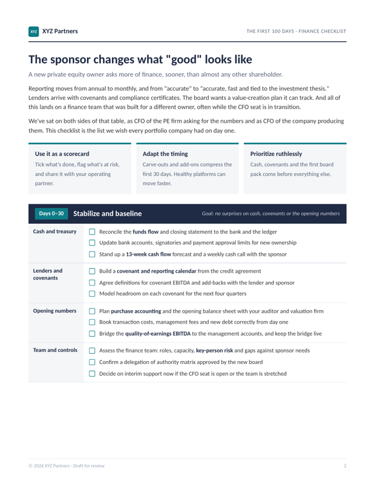
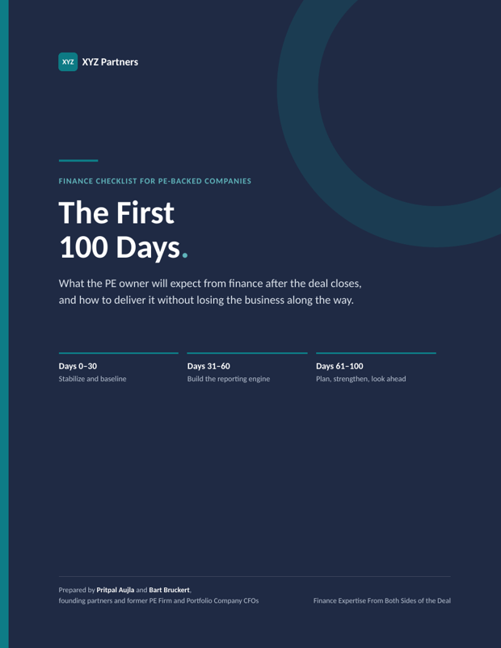

Senior finance leadership and hands-on support for PE-backed companies, so the CFO and the team can meet the owner's expectations without waiting months to hire.
Demands outstrip capacity; hiring takes months
Everyone has different numbers
KPIs are scattered and board packs built by hand
Weak cash forecasts; exit prep left late
“Can I trust my numbers by day five?”
A faster, cleaner close built on reconciled accounts and well-run payables and receivables.
“Does everyone see the same numbers?”
One consolidated set of numbers for management, the board and the PE owner.
“Is the value-creation plan on track?”
Budgets, forecasts and KPI dashboards tied to the investment thesis, so progress is visible every month.
“Will we hit the covenant next quarter?”
A rolling 13-week cash view and covenant headroom, so there are no surprises for you or your lenders.
“Will the audit go smoothly, and are we on top of tax?”
Audit-ready accounts and documented controls, with tax risk managed alongside your advisers.
“Are we ready if a buyer calls tomorrow?”
Diligence-ready numbers well before a sale, and a clean finance integration for every add-on.
A senior finance hire is a six-figure commitment, before the rest of the team is built, and talent often leaves after the deal.
average total cash for a US PE-backed CFO, up 5% on 2024
of PE and VC-backed CFOs report a shortage of finance professionals
the rise in attrition seen at competitors, in the year after a PE acquisition
Sources: Heidrick & Struggles PE-backed CFO Compensation Survey 2025 (n=213 US CFOs); Vardis PE CFO Report 2025; Revelio Labs, PE Investments Bring Talent Divestment, February 2025.
Finance team, processes, systems and banking built from scratch for a joint venture of three pro sports franchises
Annualized EBITDA improvements, working with the sponsor after a $3.6B buyout
Close cut by 80%, with better accuracy
Of liquidity pressure managed on 13-week cash flow, with new lender facilities
Led corporate finance through the sale of a sponsor-backed media company to a strategic buyer
Targeted consulting on a specific issue or review
Defined projects such as valuation, systems or controls documentation
Fractional senior or specialist roles inside your team
We run functions such as reporting, FP&A and close
We design it, hire it and run it until your team takes over


What the PE owner will expect from finance after the deal closes, written by two former CFOs who have sat on both sides of the table.
Four pages, PDF. We'll send it to your inbox and the occasional note on PE finance. Unsubscribe anytime.
Talk it through with Bart Bruckert and see where we can help.